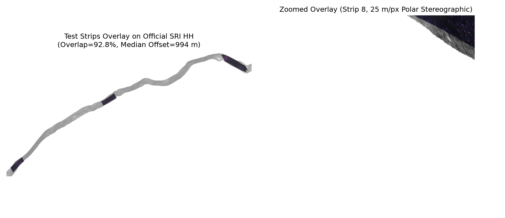

Detection, Pixel-Level Localization, and Statistical Evaluation of Lunar South Polar Radar Anomalies in Chandrayaan-2 DFSAR L-Band Quad-Pol Data
CPR > 1.0 & DOP < 0.13 on 7×7 multilooked data) and do not confirm physical water ice. All results come from a single scene (ch2_sar_ncxl_20260308t062017233) with anisotropic slant-range pixels (0.505 m × 9.593 m), testing strip-held-out generalization only.
We evaluate deep learning on Chandrayaan-2 DFSAR Level-1A slant-range imagery (rows 90,624–319,812, 13,886 patches with 256-row azimuth guard buffers; deterministic split val=[2, 6, 17], test=[0, 8, 15] selected using label prevalence constraints with zero model feedback) using intensity-only [HH, HV, VV] log-intensities. Empirical findings:
(1) on patch classification, CustomCNN (0.8124 ± 0.0408 5-fold CV ROC-AUC) is not separable from LogisticRegression (0.8118 ± 0.0460; within-test-set paired ΔROC-AUC = +0.0228 [-0.0109, +0.0546]);
(2) ResNet_pretrained (0.7970 ± 0.0123 3-seed mean) underperforms, consistent across seeds, and is not separable under strip CV, while ResNet_SSL (0.7892 at 10% labels) beats ResNet_scratch (0.5250) but does not beat LogisticRegression (0.8036) or CustomCNN (0.8080);
(3) pixel-level IceUNet improves localization over context-free baselines (0.0093 ± 0.0003 PR-AUC / 17.6× lift, 0.0110 / 20.9× ensemble vs. 0.0012 for 1×1 LogReg), though context-matched 7×7+15×15 HistGBDT (0.0077 PR-AUC, 14.6× lift) already recovers 82.6% of single-seed IceUNet PR-AUC (69.8% of the ensemble), and a circular 3-seed phase-oracle diagnostic (|HH*conj(VV)|) raises PR-AUC by +17.9% (0.0097 → 0.0114) with Dice remaining low (0.0283 → 0.0330); and
(4) normalized TPS georeferencing over 676 GCS_MOON GCPs yields 307.38 m median (367.98 m mean, 2,377.70 m max, ~2.4 km boundary tail) 10-fold CV residual and 92.79% SRI HH overlap.
| Model | Pooled ROC / PR / F1 | Strip 0 ROC / PR / F1 | Strip 8 ROC / PR / F1 | Strip 15 ROC / PR / F1 | 5-Fold CV ROC-AUC |
|---|---|---|---|---|---|
| CustomCNN | 0.844 / 0.566 / 0.537 | 0.942 / 0.783 / 0.771 | 0.662 / 0.222 / 0.262 | 0.763 / 0.380 / 0.431 | 0.8124 ± 0.0408 |
| IceUNet (mean_prob) | 0.846 / 0.564 / 0.530 | 0.950 / 0.796 / 0.787 | 0.637 / 0.183 / 0.231 | 0.773 / 0.395 / 0.457 | 0.7955 ± 0.0448 |
| ResNet_scratch | 0.840 / 0.544 / 0.529 | 0.945 / 0.783 / 0.777 | 0.640 / 0.174 / 0.214 | 0.770 / 0.382 / 0.460 | 0.7978 ± 0.0427 |
| LogisticRegression | 0.821 / 0.498 / 0.509 | 0.916 / 0.643 / 0.685 | 0.605 / 0.228 / 0.261 | 0.785 / 0.422 / 0.441 | 0.8118 ± 0.0460 |
| ResNet_pretrained | 0.815 / 0.480 / 0.489 | 0.924 / 0.654 / 0.730 | 0.602 / 0.137 / 0.236 | 0.751 / 0.385 / 0.473 | — |
| IceUNet (Optuna, single run, excluded from ranking) | 0.8497 ROC (single run) | — | — | — | — |
Under paired sub-block bootstrap (104 256-row blocks + 64-row guard, within-test-set variability only), CustomCNN - LogisticRegression (+0.0228 [-0.0109, +0.0546]) and IceUNet_mean_prob - CustomCNN (+0.0020 [-0.0092, +0.0108]) are not separable.
| Model | Context | Pixel PR-AUC | Lift vs. 0.0527% | Dice (Val Th) | Cond. Dice (Pos Patches) | IoU (Val Th) |
|---|---|---|---|---|---|---|
| HV/HH Ratio (context-free) | 1×1 | 0.0011 | 2.2× | 0.0036 | — | 0.0018 |
| Pixel LogReg (context-free) | 1×1 | 0.0012 | 2.3× | 0.0016 | — | 0.0008 |
| Context Pixel LogReg (7x7) | 7x7 | 0.0058 | 11.0× | 0.0177 | — | 0.0089 |
| Context Pixel HistGBDT (7x7) | 7x7 | 0.0072 | 13.7× | 0.0215 | — | 0.0109 |
| Context Pixel LogReg (7x7+15x15) | 7x7+15x15 | 0.0067 | 12.7× | 0.0189 | — | 0.0096 |
| Context Pixel HistGBDT (7x7+15x15) | 7x7+15x15 | 0.0077 | 14.6× | 0.0229 | — | 0.0116 |
| IceUNet (3-seed mean) | 64×64 | 0.0093 ± 0.0003 | 17.6× | 0.0266 | 0.0377–0.0519 | 0.0135 |
| IceUNet 3-Seed Ensemble | 64×64 | 0.0110 | 20.9× | 0.0334 | 0.0539 | 0.0170 |
| Phase Oracle 3-ch Control (3 seeds) | 64×64 | 0.0097 ± 0.0003 | 18.4× ± 0.6× | 0.0283 ± 0.0026 | — | 0.0144 ± 0.0014 |
| Phase Oracle 4-ch (CIRCULAR diagnostic, 3 seeds) | 64×64 | 0.0114 ± 0.0011 | 21.7× ± 2.1× | 0.0330 ± 0.0044 | — | 0.0168 ± 0.0023 |

Evaluated on the unified 3-seed ensemble mean predictor, error-detection AUROC exceeds Random (0.5240) for |p - 0.5| (0.8310), MC Entropy (0.8282), and Ensemble Variance (0.7879). Yet retained Patch ROC-AUC falls from 0.8456 (100%) to 0.7759 (EnsVar), 0.7616 (MC), and 0.7416 (|p - 0.5|) at 50% coverage vs 0.8491 (Random); |p - 0.5| is best by AURC (0.1084). Uncertainty is not usable for selective rejection here.
Structured 50% channel pruning achieves a measured CUDA speedup only at B=64 (10.860 → 5.359 ms, 2.03×), with no material speedup at B=1 (2.244 → 2.058 ms), and none for structured 30% or unstructured L1 pruning.
| Configuration | Non-Zero Params | Patch ROC-AUC | Pixel PR-AUC | Latency B=1 (ms) | Latency B=64 (ms) |
|---|---|---|---|---|---|
| Base (0%) | 1,084,681 | 0.8291 | 0.0093 | 2.244 | 10.860 |
| Structured Channel 30% (base_ch=17) | 544,834 | 0.8099 | 0.0065 | 2.220 | 11.441 |
| Structured Channel 50% (base_ch=12) | 271,909 | 0.8474 | 0.0100 | 2.058 | 5.359 |
| Unstructured L1 50% (param reduction) | 543,481 | 0.8372 | 0.0074 | 2.220 | 10.933 |
| Unstructured L1 90% (param reduction) | 110,521 | 0.8273 | 0.0058 | 2.208 | 10.939 |

10-fold CV over all 676 GCS_MOON GCPs yields 307.38 m median, 367.98 m mean, and 2,377.70 m max hold-out residual (~2.4 km boundary tail; alongside 281.7249 m max on 5 interior GCPs). The 92.79% overlap metric is the percentage of valid TPS-warped test-strip pixels (61,857 of 66,664) whose nearest-neighbor cell on the official 25 m/px ISRO SRI HH grid has positive finite backscatter (SRI HH > 0).
